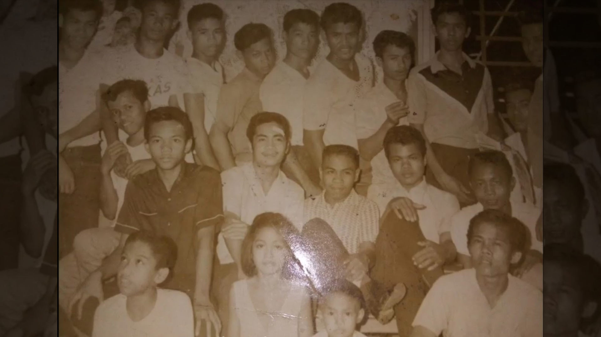
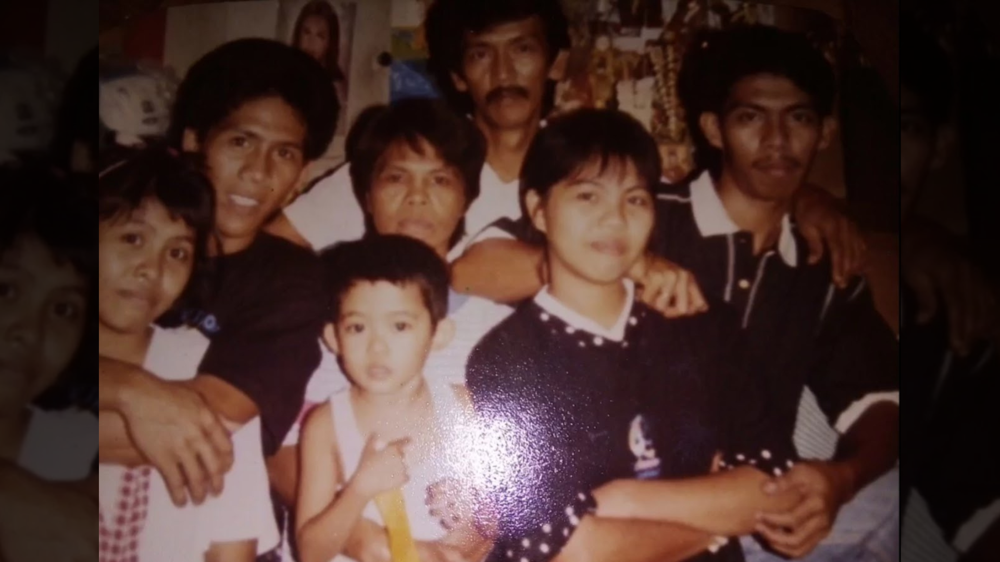
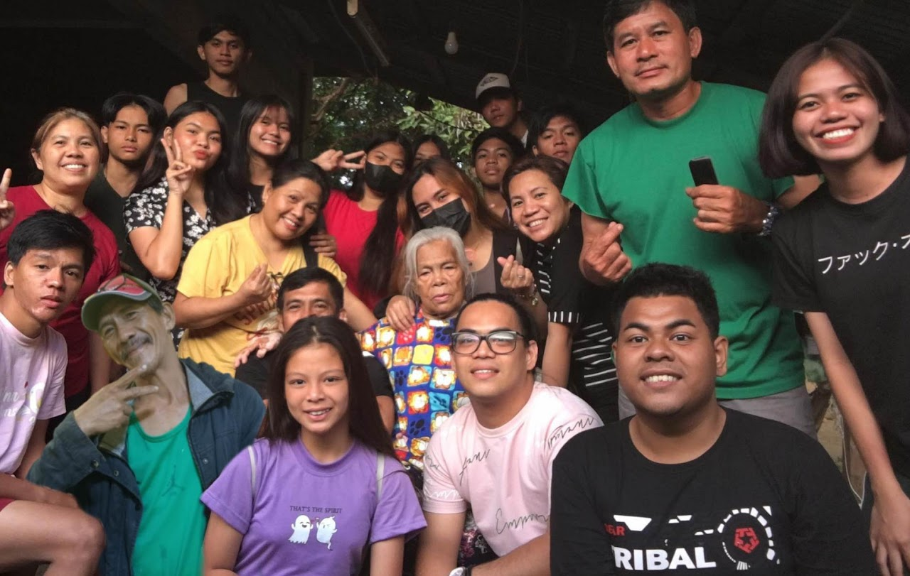

OUR STORY

First Generation (Alcantara-Restua)
Our beloved Restua family has evolved through the years; it has generations
that represent how our family has grown up since 1945. Every name, event,
and memory were written by our own family history. This is our family history.
Our family traced the roots of the child named Benjamin, who is our great-grandfather.
He was a homeless child before being adopted by a Chinese family named Restua, from which
our surnames or middle names were inherited. After the years, he met and married Serafina
Alcantara-Restua, who is our great grandmother, and they have 11 children named Nory, Hermie,
Raymundo, Leonardo, Lito, Elvie, Apple, Luz, Sapa, Danilo Sr., and Benser. During the time of
the war (World War 2), Benjamin kept his family in safety by hiding in the cave, and our great-grandfather
Benjamin shot a shrapnel gun by an unknown gunman. Benjamin was a simple businessman before. After his death,
they lived with their family peacefully until they married and had children.

Second Generation (Tagupa - Restua)
Our grandfather, Leonardo Alcantara-Restua, was a construction worker.
He met and married our grandmother, Maria Tagupa-Restua in the city of Manily and they had four children,
named Edwin, Jack, Lilibeth, and Anita. The four children were taught by our grandfather the importance of family values
such as faithfulness, love, unity, respect, and servanthood. Second-generation family members were disciplined
before they followed the rules imposed by their parents as well as Grandpa Leony and Grandma Maria are strict parents
. Still, they do their best to work and take care of the family and earn a living through laundry services, selling food,
and freelance carpentry work. Danilo Restua Jr. who is originally the child of Danilo Restua Sr., has been with the siblings
since he was in first grade when Leonardo and Maria took care of him. Leonardo suddenly had a heart attack
while he was giving Lilibeth some cash for her work and taking some rest. The whole family rushed him to the Philippine Heart Center, and
they did their best to survive his life by pumping his heart until he passed away on June 16, 1996.

Present Generation (Leony - Maria Clan)
The third generation of family members were once called as "Teammates" started with Jerome Juliano Restua, who was born on November 28, 1994.
It was only Jerome who reached the life and death of Leonardo. After the death of Grandpa Leony,
members of the third generation increased, including Kathleen Linga Restua (1998),
Joan Restua Lalog (June 2000), Joseph Restua and Jefferson Restua (October 2000),
Michael Iven Restua Gohilde (2001), Jonard Restua Lalog (May 2002), Jaclyn Ann Juliano Restua (November 2002),
Mikaella Ivee Restua Gohilde (2004), Jeneth Restua Lalog (2005), Jhasmin Mae Juliano Restua (2006),
Miguel Gabriel Restua Gohilde (2008), and David Nash Linga Restua (2010). Margarette Simon Restua (2014),
Samantha Simon Restua (2017) and Adelaine Simon Restua (2023), who are the children of Uncle Danilo and Aunt Mary Anne,
were added to the lists of cousins. Since 2017 The entire teammates build the "Fourth Generation" by welcoming acquaintances
or legalizing romantic relationship of each cousins. Our family persevered with the values and attitudes that our ancestors had left behind
through our combined efforts. The Restua family's story is more than simply their past; it's a continuous journey
filled with lessons learned, unforgettable moments, and an enduring bond that spans generations.